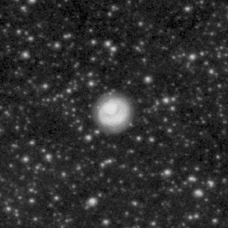
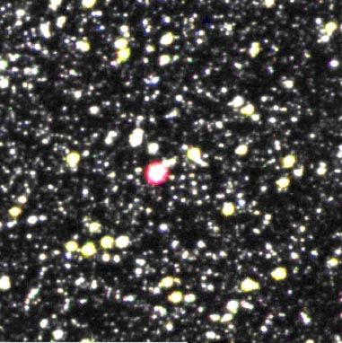

Haven't heard of a MASH planetary? The acronym stands for the "Macquarie/AAO/Strasbourg H-Alpha" planetary nebulae (PNe) catalogue. This international effort recently discovered 900 true, likely and possible new galactic planetaries during an H-alpha survey of the southern galactic plane.
The discoveries were made using the Anglo-Australian Observatory UK Schmidt Telescope (AAO/UKST) H-alpha survey. This deep, high-resolution survey (http://www-wfau.roe.ac.uk/sss/halpha/) was completed in 2003 and used an H-alpha interference filter to cover 233 survey fields. By visually scanning these fields under a microscope, the MASH team netted a 60% gain in the total number of known galactic PNe and doubled the number known in the galactic bulge. Final results were published in November 2006 (Monthly Notices of the Royal Astronomical Society, 373, 79-94).
The galactic bulge discoveries tend to be faint but compact planetaries. Outside the galactic bulge, the discoveries generally involve large, older planetaries that were missed in previous surveys because of their low surface brightness or by being obscured.
Is it still possible to observe a planetary that was discovered just a few years ago? Unfortunately, the vast majority of these planetaries are too faint for amateur scopes, but there are a few "brighter" entries and with some preparation it's possible to track down some of the MASH objects. Personally, I find it an exciting challenge to glimpse at an object that was discovered so recently that you know you're one of the first few observers to have ever taken a look. As of August 2008, I'm aware of observations of 7 MASH discoveries (discussed below). If you can add to this list, let me know and I'll post your observations. For the entire MASH catalogue see http://vizier.cfa.harvard.edu/vizier/MASH/index.htx
Here are observations of three summer MASH planetaries I made with my 18-inch Starmaster. You'll need good finder charts as well as OIII or narrowband filters to track these down. The following H-Alpha images are from MASH Image Gallery (http://vizier.cfa.harvard.edu/vizier/MASH/gallery.htx) and span 4'x4' with north up.
|
PN G027.0+01.5 = PHR J1835-0429 This object was originally listed in Neckel and Vehrenberg's "Atlas of Galactic Nebulae" as a "star with nebula" and then erroneously included in the 2003 "Merged Catalogue of Reflection Nebulae. The MASH catalogue is the first to identify this object as a planetary.
PN G010.1+07.4 = PHR J1741-1624
|